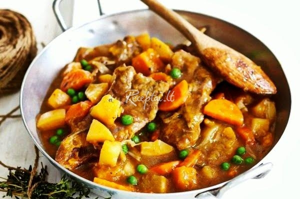

Vytinta dešra, jos kaina. Išsirink internetu. | Vynoteka
 Internetu Rekomenduojami Leidiniai Gėrimų Kiti Mūsų parduotuvės Facebook Mano profilis Siųsk žinutę Skambutis mums Kaip pirkti internetu Naujienos Bendri nauji produktai Vynas Stiprieji gėrimai Kiti produktai Alkoholiniai gėrimai Vyno naujienos Viskio naujienos Degtinės naujienos Brendžio naujienos Putojančio vyno / Šampano naujienos Burbono naujienos Romo naujienos Tekilos naujienos Konjako naujienos Alaus naujienos Sidro naujienos Likerio naujienos Trauktinės naujienos Sangria naujienos Apdovanoti gėrimai Apdovanotas vynai.com Saikingo vartojimo gairės Wine in moderationVynas Vyno rūšys Ramus vynas Putojantis vynas / Šampanas Likerinis vynas Vermutas Sangria Ekologiškas vynas Nealkoholinis vynas Vaisių - uogų vynas Vynai pagal spalvą
Baltas vynas Rožinis vynas Raudonas vynas Vynai pagal skonį
Labai sausas / Briut nature vynas Pusiau sausas vynas Sausas vynas Pusiau saldus vynas Saldus vynas Vynai pagal vynuogių rūšis Chardonnay vynas Rieslling vynas Merlot vynas Pinot Grigio vynas Cabernet Sauvignon vynas Pinot Noir vynas Zinfandel vynas Shiraz vynas Vynai pagal šalį Gruziniškas vynas Ispaniškas vynas Čilietiškas vynas Itališkas vynas Lietuviškas vynas Prancūziškas vynas Portugališkas vynas Argentinietiškas vynas Makedoniškas vynas Armėniškas vynas Bulgariškas vynas Moldaviškas vynas Australiškas vynas Naujosios Zelandijos vynas Austriškas vynas JAV vynas Vokiškas vynas PAR vynas
Alkoholiniai gėrimai Stipriųjų alkoholinių gėrimų rūšys Degtinė / Vodka Brendis Viskis Burbonas Armanjakas Tekila Konjakas Kalvadosas Romas Likeris Trauktinė Džinas Grapa Rakia Balzamas Midus Stiprieji alkoholiniai gėrimai Suomiška degtinė Švediška degtinė Olandiška degtinė Lietuviška degtinė Ukrainietiška degtinė Rusiška degtinė Vokiška degtinė Baltarusiška degtinė Slovakiška degtinė Bulgariškas brendis Ukrainietiškas brendis Prancūziškas brendis Graikiškas brendis Vokiškas brendis Ispaniškas brendis Armėniškas brendis Airiškas viskis Angliškas viskis Amerikietiškas viskis Škotiškas viskis Kanadietiškas viskis Amerikietiškas burbonas Kolumbietiškas romas Trinidado ir Tobago romas Bahamų romas Gajanos romas Jamaikos romas Indiškas romas Venesuelos romas Prancūziškas romas Vokiškas romas Ispaniškas romas Prancūziškas konjakas Prancūziškas kalvadosas Bulgariška rakia Itališka grapa Meksikietiška tekila Estiškas likeris Vengriškas likeris Slovakiškas likeris Vokiškas likeris Ispaniškas likeris Lietuviška trauktinė Latviškas balzamas
Alus Alaus rūšys Šviesus alus Tamsus alus Kvietinis (baltas) alus Nefiltruotas alus Alaus kokteiliai Nealkoholinis alus Alaus tipas Lager (apatinė fermentacija) Ale/Elis (viršutinė fermentacija) Lambic (savaiminė fermentacija) Alus pagal šalį Belgiškas alus Lietuviškas alus Olandiškas alus Daniškas alus Vokiškas alus Prancūziškas alus Čekiškas alus Meksikietiškas alus Angliškas alus Rusiškas alus Austriškas alus Sidras Obuolių sidras Kriaušių sidras Vaisinis / Uogų sidras Nealkoholinis sidras
Rinkiniai Rinkiniai Rinkiniai Silpnieji alkoholiniai gėrimai Kiti
Kiti produktai Gėrimai Sultys / Nektarai Vanduo Gaivieji gėrimai Energetiniai gėrimai Arbata Kava Maisto produktai Saldumynai Užkandžiai Riešutai / Džiovinti vaisiai Džiovinti produktai Padažai Užtepėlės Paštetai Alyvuogės Aliejus ir actas Konservuoti produktai Ikrai Prieskoniai Makaronai Džemai / Uogienės Mėsos gaminiai Pieno produktai Vynoteka Gourmet Populiariausi gėrimai ir maisto produktai Kavos pupelės Malta kava Kavos kapsulės Šaltalankių arbata Alyvuogių aliejus Saulėgrąžų aliejus Žaliosios alyvuogės Juodosios alyvuogės Saldainiai Juodas šokoladas Pieniškas šokoladas Baltas šokoladas Vafliai Kramtomoji guma Sausainiai Krekeriai Chalva Vytinta dešra Juodieji ikrai Raudonieji ikrai
Apie mus Karjera Kontaktai ir rekvizitai Vynoteka parduotuvės Leidiniai Naujienos / Įvykiai Tinklaraštis Prekių paieška Tinklaraštis Mūsų parduotuvės Prekių paieška Kaip pirkti internetu Mano profilis 0 Prekių krepšelis šiuo metu tuščias Išsirinkę prekes, spauskite mygtuką “ Į krepšelį ” Leidiniai: Gėrimų Kiti Naujausios žinutės Jums!
Filtras prekių paieškai
Vytinta dešra
Rodyti: Prekės, kurias galima įsigyti internetu Visos prekėsApie „Vynoteką“
Apie mus Karjera Mūsų kontaktai Mūsų parduotuvėsPaslaugos, kurias siūlome
Pasiūlymai įmonėms ir horeca VIP pasiūlymai Jūsų šventėmsTaisyklės / Sąlygos
Asmens duomenų apsauga Įspėjimai pirkėjams Aktuali informacija karantino metu! Pirkimo – pardavimo taisyklėsPapildoma informacija
Vynoteka leidiniai Tinklaraštis Naujienos ir įvykiai Wine moderation© 2020 Vynoteka.
Visos teises saugomos Suprogramuota pas Frogdom